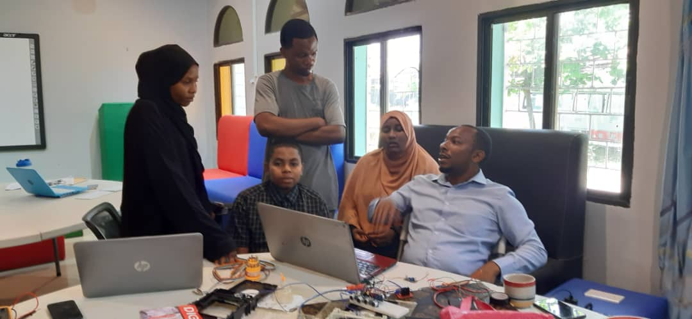

The Sustainable Savers' actionable challenge for 2023 is "COASTAL WASTE." During their field study at Nungwi, they observed various types of waste, including plastic waste, decomposable garbage, rubbish, and wastewater, which are often mixed together. Additionally, natural factors such as monsoon winds and ocean temperature contribute to waste generation.
Through the Observations and engagement with local community and stakeholders the evidence provide ground true on the existence of different types of waste includes garbage, plastics and rubbish, glasses, clothes waste, papers and other solid waste that are generated by the local community through their activities them selves and tourists activities. The exitance of the wastes affect the human health and environmental effects. After gathering evidence of observation and data, we seek to address potential solutions toward the challenges posed by coastal waste issues. .
